Data Analysis
Preliminary Tests
1 During initial testing, we chose the ESP32 microcontroller. Due to its light-weight system, WiFi connectivity and simple GPIO control, it was ideal for our initial testing.
- With the preliminary tests, we found that linear increase in temperatures for a heater profile (220-400 with 20C steps) and a consistent heater duration will not be suitable for our task as the reactions in samples are not consistent across sessions and sensors.
- It is known that longer heater durations for each temperature is beneficial for scent discrimination. However, we observed the opposite, with the KNN performance decreasing as the heater duration increases.
-
The setup required balancing the initial stabilisation time necessary to get accurate readings and the cooldown period necessary to prevent sensor burn out through continuous data collection.
- We observed that 30 minutes after hours of sensor inactivity is required, with 100 seconds of stabilisation before every measurement cycle and 10 seconds cooldown between measurements.
- 100 seconds stabilisation time is the shortest optimal time that allows us to have enough accurate readings before the scent emission to establish the baseline for correction later.
- Exception handling by the data synthesis system also had to be amended to minimize communication issues between the Raspberry Pi and olfactometer, with the olfactometer failing to enable or disable channel for about 7% of the measurement cycles. This error cascaded to fail more measurement cycles if the olfactometer instance was not restarted and communications reopened.
- From our preliminary tests, it showed that while the sensor had fairly reproducible responses to some scents, it was less so for the others, The swiftness and magnitude of the reaction to the scents varied greatly from session to session. This is a fairly well established problem with single sensors, hence most existing setups for classifying gasses utilize an array of 3 - 24 sensors.
- Image: the reaction to scent 2 (top leftmost) was reproducible across sessions with consistent magnitude and swiftness in response. This is less true for scent 1 (center left), which has great variability across sessions. It can also be seen that the two attributes (center right) do not separate the scents very well, with the exception of scent 2 and 3. Running a KNN, it achieves 73% accuracy across sessions but with confusion around scent 1.
- We conclude the preliminary tests when it is obvious to us that the classification will not be effective using linear increase in temperature for heater profile.
- We then used the default heater profiles in a variant of the sensor we use, BME688, which has multiple lab tested heater profiles for different applications. Our sensor differs with the 688 in that they have an array of 8 sensors, with a maximum of 4 heater profile configurations allowed for each measurement cycle.
- We begin with the default heater profile recommended by Bosch for general use cases, as seen in figure 3.
- With the new heater profile, we hoped to observe more distinctive reaction patterns between different scents. The raw resistance readings were not immediately distinguishable between scents.
- However, when using the last few measurement cycles of the stabilisation period as baseline to apply correction, it can be seen that scent 2 - 4 has a fairly distinguishable sensor reaction.
- However, scent 1 still suffers from the lack of reaction when compared to scent 0 (air), which means it received little to no reaction during emission.
- This is very interesting, as scent 1 is peppermint, which is the strongest scent in perception when compared to the others.
- We extracted 4 features: (standard deviation and mean of resistance, percentage decrease in resistance and time at the lowest resistance) for each heater index, hoping that the sensor registers different reaction at different heater temperature between scents. However, upon visualisation of the features, it can be seen that the scent are not very distinguishable.
- With the KNN performing only marginally better than linear increase heater profile, we decided to separate the task into two phases, first establishing a robust classification algorithm in a more restricted environment, then transfer that to an open environment.
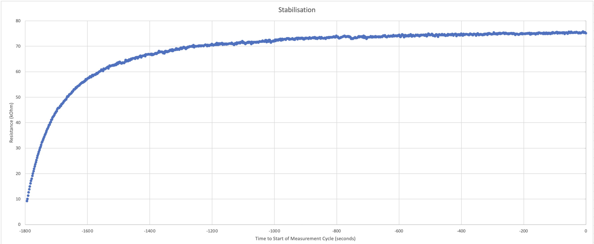
Figure 1: 30 minute stabilisation for hours of inactivity
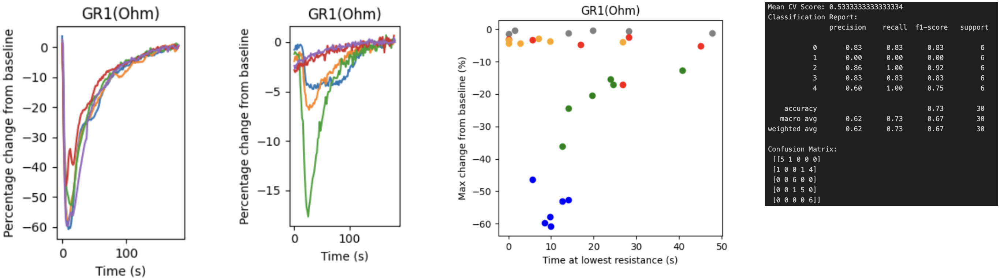
Figure 2: Sensor response to scents
Default Heater Profile
Open Environment
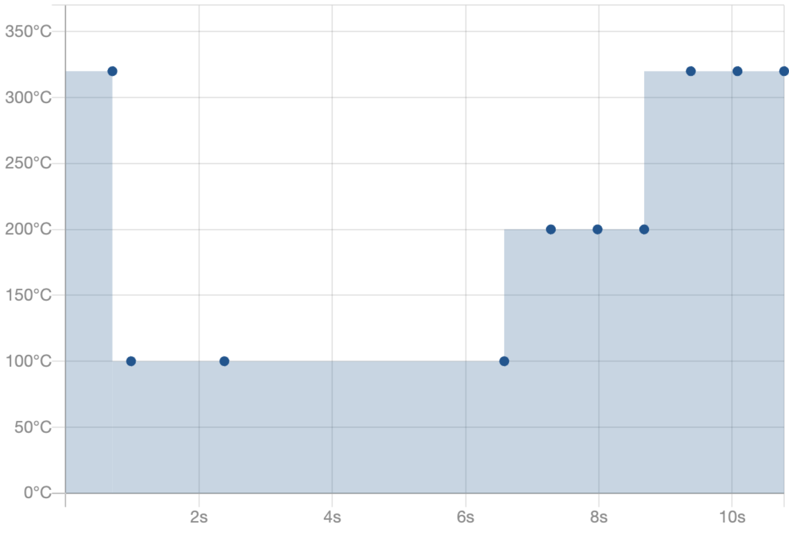
Figure 3: Bosch Recommended Heater Profile
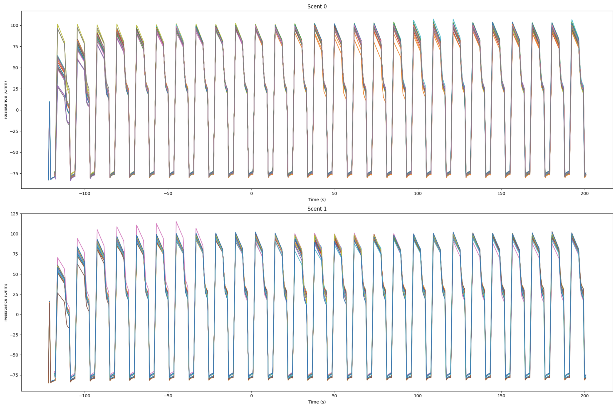
Figure 4: Raw Readings
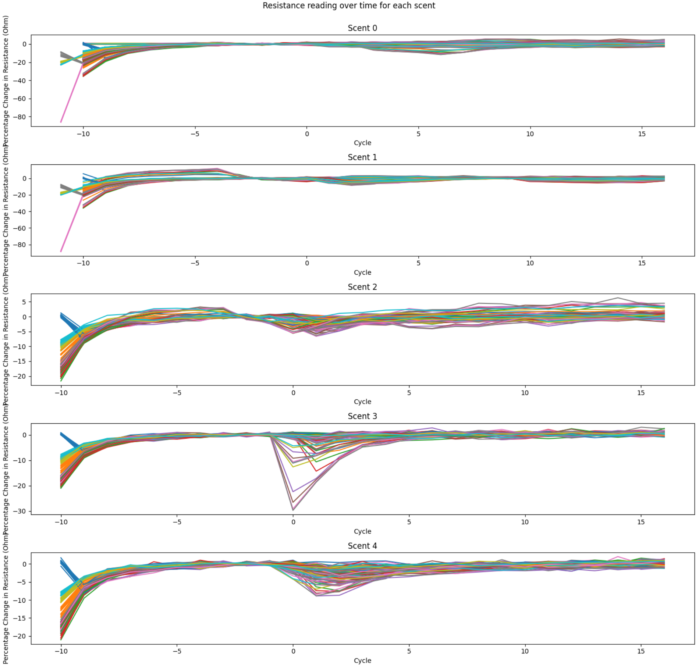
Figure 5: Baseline Corrected
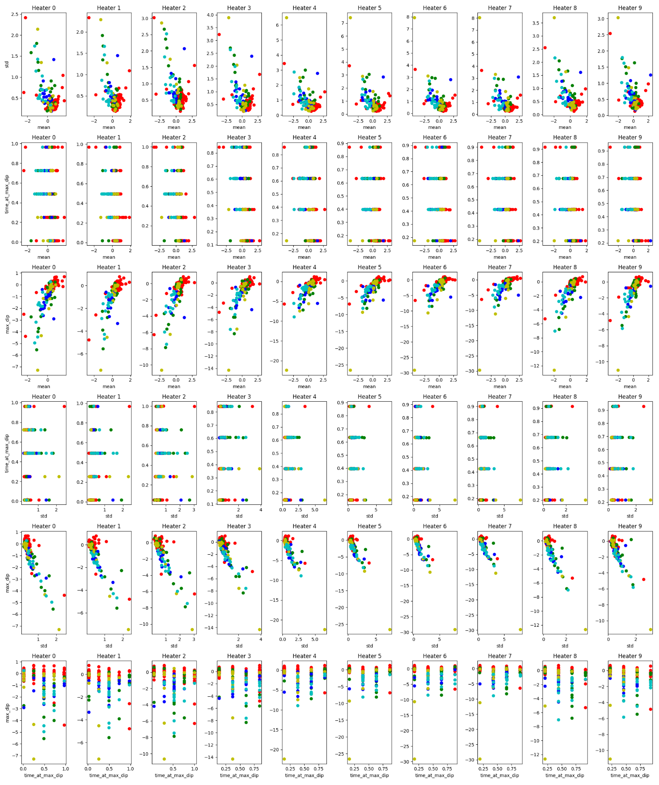
Figure 6: Feature Visualisation
- We move the data collection system in a large plastic container to see if the scents are actually not distinguishable, or if the concentration is not enough for a single sensor to classify in open air.
- However, this setup introduces the issue of container contamination, as 50 regular emissions of 10 seconds for every scent may affect the reading we receive.
- We attempt to minimize this issue by leaving the container to dissipate the scent for 1.5 hours between scents.
- The baseline corrected results indicate that the container causes the scents to be vastly more distinguishable, even for previously dormant scent 1.
- It can be seen that the magnitude and swiftness of resistance decrease, and the rate of recovery in resistance greatly varies between scents.
- However, we also observe that the magnitude of response decreases as more samples are collected. We suspect this is due to insufficient time between scent emissions for dissipation.
- When using the same features as we did before, the scents are now much more distinguishable when visualized. ----- INSERT IMAGES PG 4-----
- We see the KNN performance massively increases with a closed container, when using the same features as the previous experiment, with accuracy consistently staying above 95%.
- We also trained a small MLP multi-class classification model to see if there are representations which can learned which cannot be seen with KNN. It seems the NN increases the performance by 2-3%.
- Observing that scent 4 has fairly peculiar readings with high noise, we wanted to establish whether that is due to container contamination towards the end of the experiment (20+ hours)
- Hence, we repeated the experiment again but reversed the order to collect scent 0, then 4 to 1. We observe that the noise that not seen in the previous experiment become more prominent in scent 1 and 2, thus it is reasonable to say that the data collection can be heavily affected if there is contamination.
- We wanted to observe what happens to the classification performance when the data from open and closed environments are mixed. As expected, performance decrease in the KNN by 20%, and MLP 10%. What is interesting is the MLP performing better than KNN by 10%, greater than the previous runs, suggesting the MLP learns unknown representations in the sample which will be useful for classification later.
- With an accuracy of 80+, our priority is now to find better features and attempt classification without the need of time stamps.
- To see how effective the model is without timestamps, we use a window of 5 heater profile cycles as a sample (~50sec), sliding by 1 heater cycle for the next sample. This produced much more samples for each scent, but also means we cannot use features such as time at maximum dip for a feature. This allows us to see if the model can learn the hidden representation using just a few cycles as a sample, but also enables continuous prediction.
- We processed the data minimally, only using the stabilisation readings as baseline to apply correction.
- Using 5 layers, we construct the model as shown in Figure 11 with Adam optimiser and CrossEntropyLoss, achieving 81% accuracy (more layers had marginal improvements)
- We also increased the window size to 7 cycles (~70s) and saw a 1% increase in accuracy.
- With window size of 10, we saw a further 2% increase in accuracy to 84%.
- With window size of 3, the accuracy decreased to 75%.
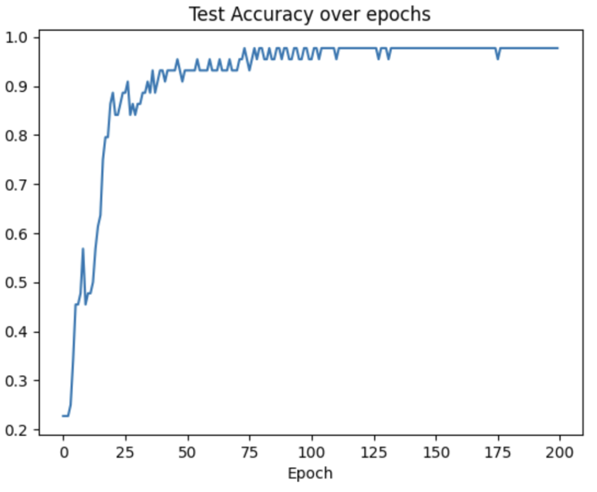
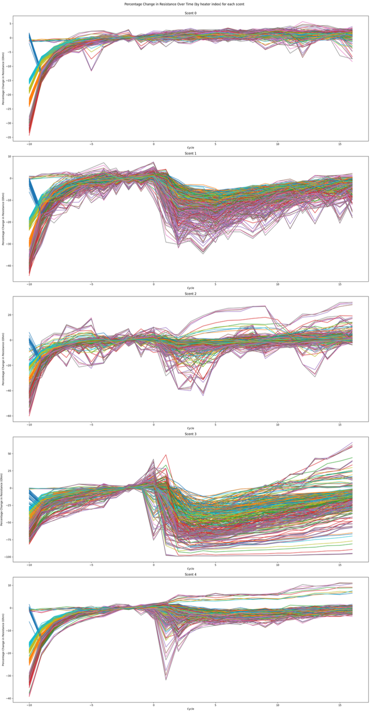
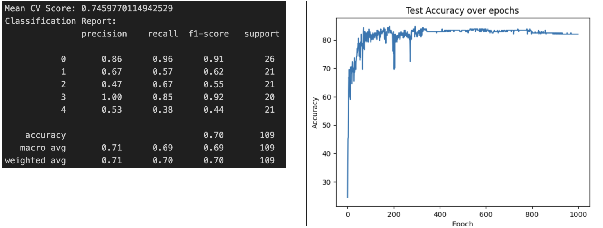
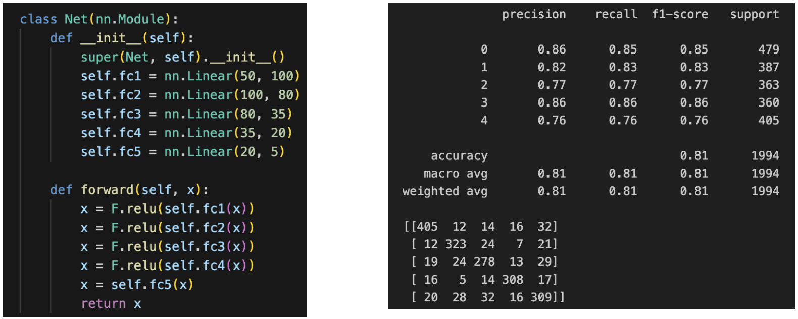
Figure 11: Model Architecture
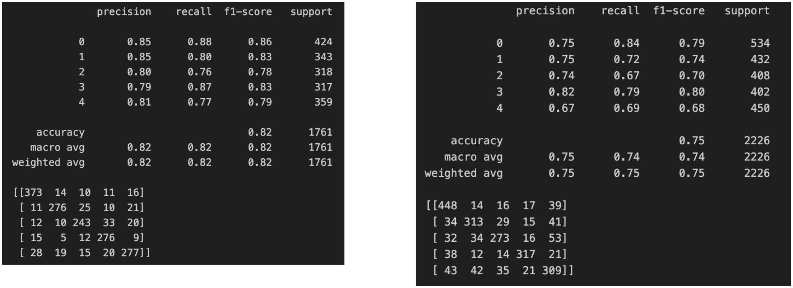
- We use TsFresh to run feature extraction on the existing data.
- Using only timestamp and resistance reading, disregarding heater index.
- We extract 658 features after the module auto-rejects irrelevant features.
- Using MLP with the architecture below, we achieve a maximum of 97.89 % accuracy.
- This shows around 2-3% improvement when compared to the previous experiment using the datasets collected in containers on Jan 27 and 29.
- We take this further by using the tsfresh.feature_selection.relevance.calculate_relevance_table function to see how relevant each feature actually is.
- We see that out of 658 features, there are only 85 which are actually relevant to all 5 scent classes (p-value < 0.05)
- With this information, we train a smaller neural network to see these 85 features are adequate for classification
- We achieve 96.84% accuracy, indicating these may indeed suffice
- We see that both confusion matrices have a sample wrong for air and for scent 1. Upon repeating the experiment, the confusion matrix is still the same. This may be caused by a few poor quality examples.
- We now see if this performance can be sustained with data collected without a container, which is less prone to contamination but has seen less sensor reaction from the scent exposure.
- We extracted 204 features, and used this to train the same neural network as above, with a highest accuracy of 83.87%.
- This is a substantial improvement from the initial 60% we achieved with minimal feature extraction (and without).
- We also calculated the feature relevance table, and what we found was that no feature is relevant for all 5 scent classes, which differs from the contained experiment. We will investigate this further from the mixed experiment.
- We see how mixing the datasets affects the performance, when compared to the previous experiments without automised feature extractions and sliding window (80-84% accuracy)
- We extracted and filtered the features with 658 left for training
- This achieves a maximum of 92.73% accuracy, which is around 10% increase when compared to the previous mixed experiment with sliding window (no feature extraction), and 5% increase when compared to previous mixed experiment with manual feature extraction.
- We once again calculated the feature relevance table, and found this time 61 features which are relevant to all scent classes. This is less than the contained experiment (85) but much more than the open air experiment.
- We train a neural network with only these 61 features, and we achieve a highest accuracy of 89.09%. We now see that the automised feature extraction only offered 2% increase in accuracy. This is perhaps due to the imbalanced data sizes between open air data and container data.
- We now use the sliding window technique we used to gather more data out of a measurement cycle as before, using 5 data points (5 heater profile cycles) as a sample, then take the most recent 4 data points and then upcoming data point as a sample. This way, each sample is about 50 seconds of measurement window.
- This way, we get 1976 samples out of 152 scent emission cycles.
- Each window takes about 1.5s to compute for features, hence makes it feasible for real time prediction of the scent.
- We retain 324 features out of the original 783.
- Using the same neural network architecture as before, we achieve 79.8% accuracy on the test set, up from 70% when using manual and no feature extraction, but down from 84% from taking the entire measurement cycle as a window.
- Calculating the feature relevance as before, we retain 32 features that are relevant to the classification of all scents, which was not the case with the open environment without sliding window (it retained 0)
- Training on the 32 features that are relevant to the classification of all scents, we once again get 78.54% accuracy on the test set.
- Excluding air from the dataset we get 76.12% accuracy.
- We mix the container and open air samples, and use 7 heater profile cycles as a sample. We obtain 783 features with 8240 samples.
- We first train the NN without feature selection, achieving highest 91.2% accuracy on the test set, beating 81% accuracy on the same dataset with sliding window of 7 without feature extraction.
- We obtain 90.96% accuracy 488 selected features.
- Further filtering features to only 266, we obtain accuracy of 92.9%.
Data collected with container (pure)
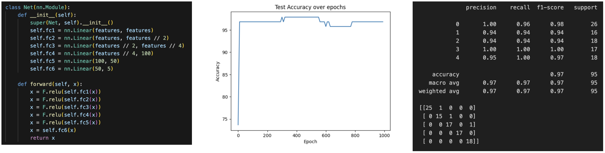
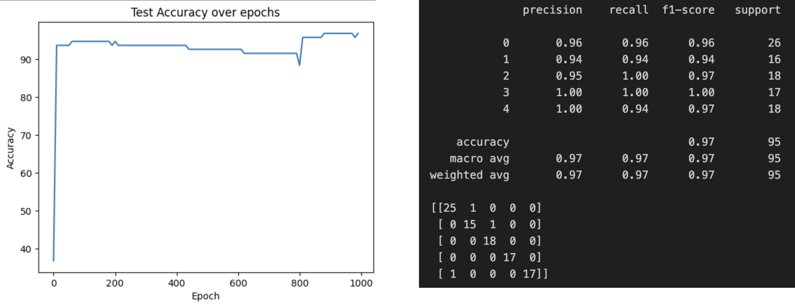
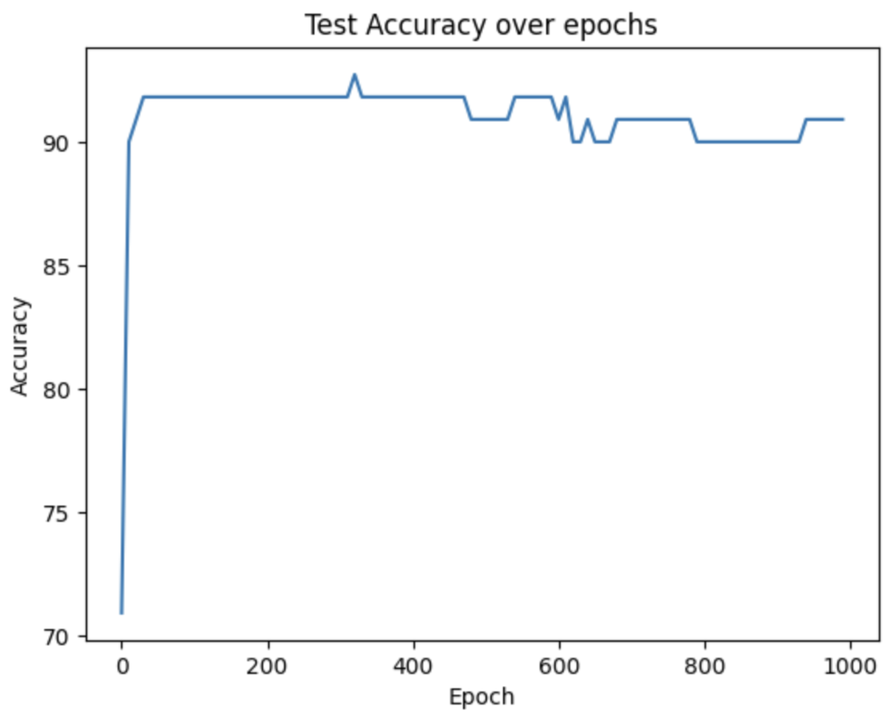
685 Features
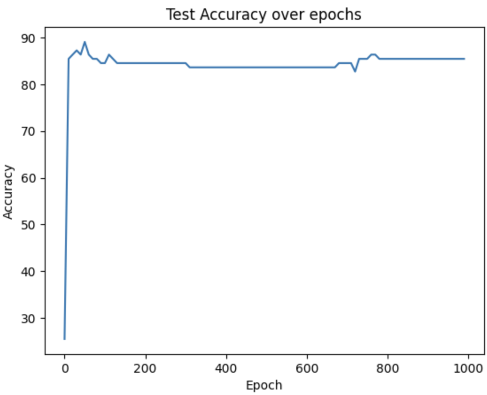
61 Features
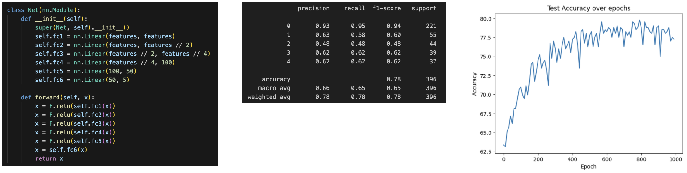
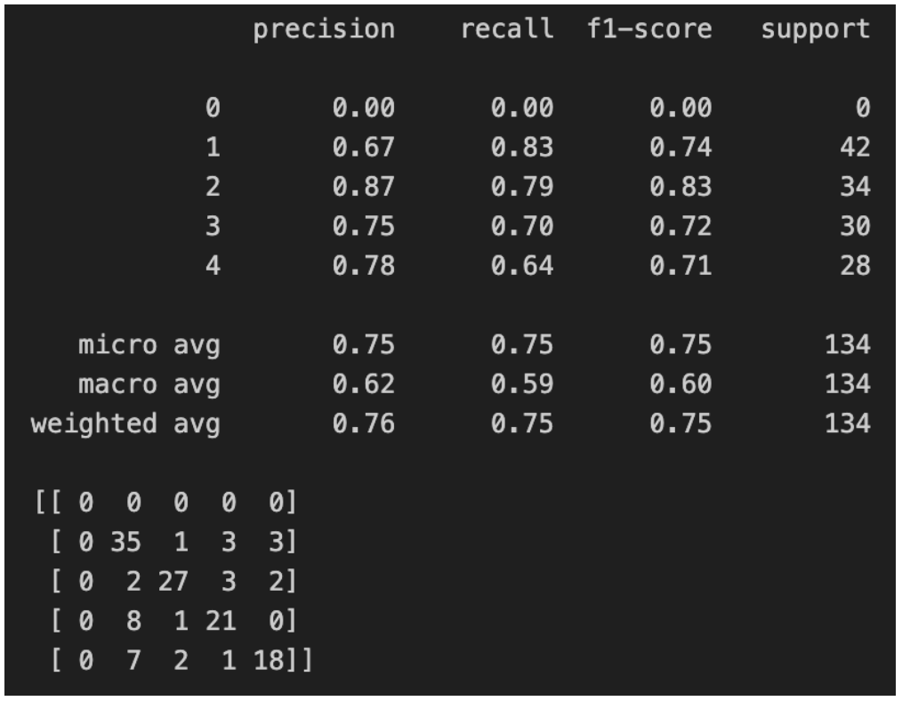
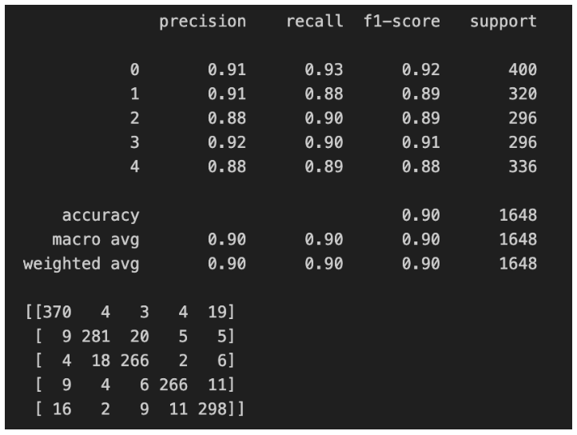
Confusion matrix when training using all 783 features

Confusion matrix when training using 488 features
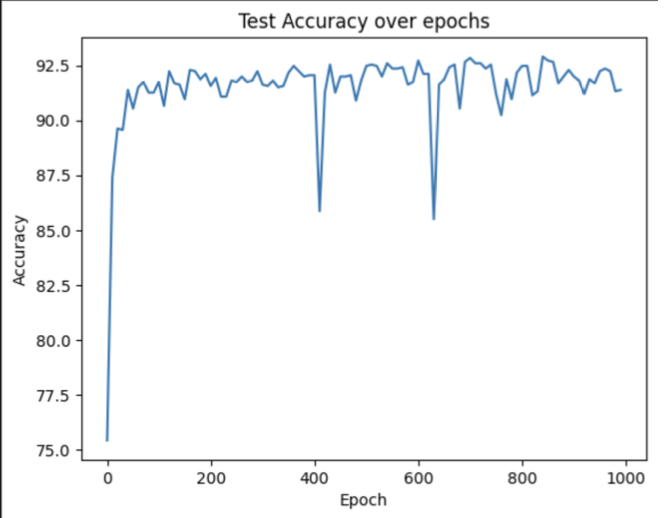
Test accuracy over 266 features
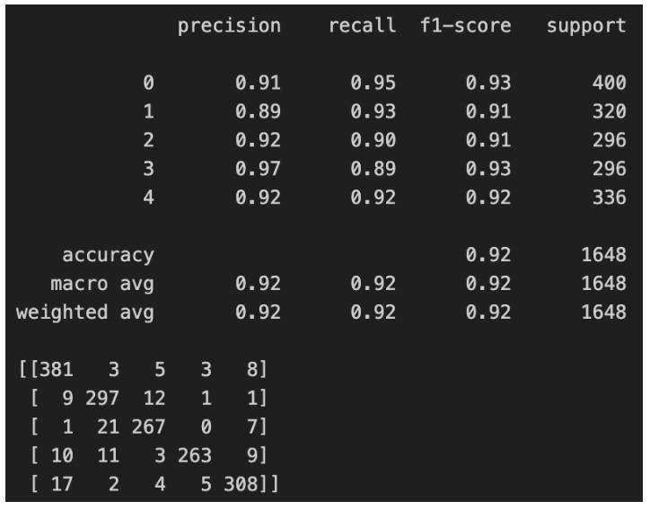
Confusion matrix for 266 features
Technology Review
Hardware1 During initial testing, we chose the ESP32 microcontroller. Due to its light-weight system, WiFi connectivity and simple GPIO control, it was ideal for our initial testing.